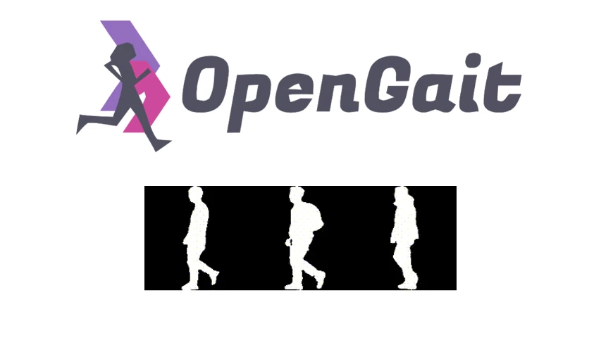
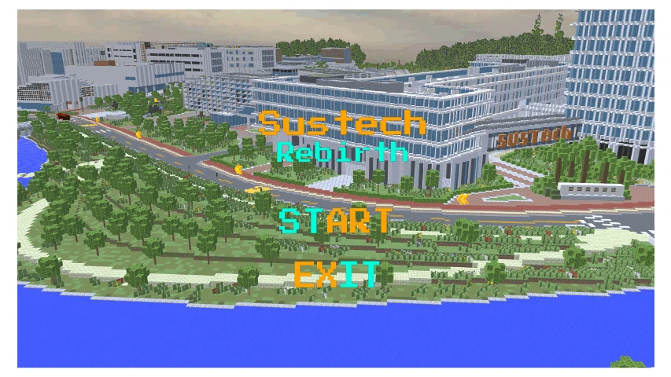

Dingqiang Ye
Email / Google Scholar / GitHub / CV
I am a second-year Ph.D. student in Electrical and Computer Engineering at Johns Hopkins University, advised by Prof. Vishal Patel. I earned my M.Eng. (2025) and B.E. (2022) from SUSTech, advised by Prof. Shiqi Yu. In 2024, I was also fortunate to spend eight months as a research scholar at Michigan State University, supervised by Prof. Xiaoming Liu. I am seeking research internship opportunities and welcome discussions and collaborations. Feel free to get in touch!
News
- Our paper PuppetGait (co-author) was accepted to NeurIPS 2026.
- Two papers accepted to ECCV 2026: FoundationGait (Spotlight) and InstantHDR.
- Our paper GaitMax (co-author) was accepted to CVPR 2026 (Highlight).
- Our paper BiggerGait was accepted to NeurIPS 2025.
- Our paper SapiensID (co-author) was accepted to CVPR 2025.
Many thanks to all my collaborators!
Research
I am interested in video understanding, world models, and multimodal agents. Much of my research explores how models can remember, reason about, and recognize people and events in videos. Selected papers are highlighted.

Recurrent Vision Language Models Solve the Shell Game
Dingqiang Ye, Jiacong Xu, Wen Zhang, Yiqun Mei, Vishal M. Patel
arXiv, 2026
Paper
Recurrent attention lets VLMs track hidden objects through long videos and generalize to shell games longer than those seen during training.
Identity World Model: Recognizing People in an Imagined Latent World
Dingqiang Ye, Kartik Narayan, Vishal M. Patel
arXiv, 2026
Paper
Imagining how a person would look under different conditions in latent space makes recognition more robust, without generating images.

PuppetGait: Generalizing Gait Recognition via 3D Body-Aligned LVM Features
Chengwei Ye, Dingqiang Ye, Chuanfu Shen, Zirui Zhou, Chao Fan, Shuaijun Jiang, Vishal M. Patel, Shiqi Yu
NeurIPS, 2026
Paper
/ Code
Aligning large vision model features to a 3D body representation improves gait recognition across changes in viewpoint and pose.

VideoResearcher: Self-Improving Tool Design for Long-Video Understanding
Dingqiang Ye*, Dongdi Zhao*, Kaishen Wang, Qingqiao Hu, Jingchen Sun, Yijun Liang, Yuqi Jia, Yiqiao Huang, Yunjie Tian, Jiaxing Zhang, Chuanyang Jin, Ke Zhang, Vishal M. Patel, Di Fu
arXiv, 2026
Paper
Video agents design, test, and refine their own tools to answer questions about long videos, without updating model weights.

Where to Look Matters: On-Policy Self-Distillation for Long-Video Understanding
Kaishen Wang, Dongdi Zhao, Yijun Liang, Dingqiang Ye, Ruibo Chen, Heng Huang, Di Fu
arXiv, 2026
Paper
A teacher that sees relevant video clues guides a full-video student, improving long-video understanding without answer labels.

InstantHDR: Single-forward Gaussian Splatting Initialization for HDR 3D Reconstruction
Dingqiang Ye*, Jiacong Xu*, Jianglu Ping, Yuxiang Guo, Chao Fan, Vishal M. Patel
ECCV, 2026
Paper
/ Code
/ Dataset
A single forward pass initializes an HDR 3D Gaussian scene from uncalibrated images captured at different exposures.

Silhouette-based Gait Foundation Model
Dingqiang Ye, Chao Fan, Kartik Narayan, Bingzhe Wu, Chengwen Luo, Jianqiang Li, Vishal M. Patel
ECCV, 2026 (Spotlight)
Paper
/ Code
Self-supervised pretraining across gait datasets builds a scalable foundation for recognition, health screening, and attribute estimation.

Unlocking Motion from Large Vision Models with a Semantic and Kinematic Duality for Gait Recognition
Zhanbo Huang, Dingqiang Ye, Xiaoming Liu, Yu Kong
CVPR, 2026 (Highlight)
Paper
/ Code
Combining global semantics with body-part motion captures richer gait patterns while reducing reliance on clothing and viewpoint.

BiggerGait: Unlocking Gait Recognition with Layer-wise Representations from Large Vision Models
Dingqiang Ye*, Chao Fan*, Zhanbo Huang, Chengwen Luo, Jianqiang Li, Shiqi Yu, Xiaoming Liu
Complementary features from different layers of large vision models improve gait recognition with fewer hand-designed gait priors.

SapiensID: Foundation for Human Recognition
Minchul Kim, Dingqiang Ye, Yiyang Su, Feng Liu, Xiaoming Liu
One model unifies face and body recognition across changes in pose, visibility, and image scale.

BigGait: Learning Gait Representation You Want by Large Vision Models
Dingqiang Ye*, Chao Fan*, Jingzhe Ma, Xiaoming Liu, Shiqi Yu
General-purpose vision features become gait representations without requiring supervised silhouettes or other task-specific preprocessing.

GaitEditer: Attribute Editing for Gait Representation Learning
Dingqiang Ye*, Jingzhe Ma*, Chao Fan*, Shiqi Yu
arXiv, 2023
Paper
Editing clothing, viewpoint, and other gait attributes creates diverse training sequences while preserving identity and temporal continuity.
Experience
Research Scientist Intern, TikTok
May 2026 -- Aug. 2026Self-improving Agents in Long Video Understanding
Research Scholar, Michigan State University
Apr. 2024 -- Nov. 2024
Working on an IARPA-funded program, BRIAR.
Human Recognition at Long Range and from High Altitude
Software Engineer Intern, Tencent
Jun. 2021 -- Sep. 2021Worked for WeTV, one of China's largest online video platforms, backend development team.
Teaching
Teaching Assistant, SUSTech
Sep. 2019 -- Jul. 2023
Projects

Contributor, OpenGait
Jul 2022 -- Apr 2024A flexible and extensible gait analysis project. The corresponding paper has been accepted by CVPR'2023 as a highlight paper.

Leader, SUSTech Tower Defense Game
Sep 2020 -- Jan 2021A Tower Defence Game based on Unity 3D, using scale models of Minecraft SUSTech.